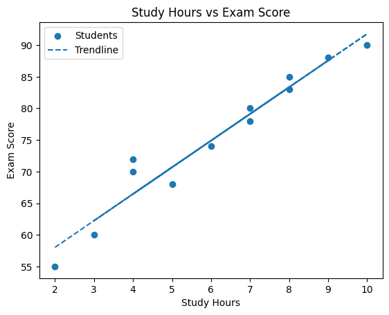

Study Results Visualization

This scatter plot illustrates a strong positive linear relationship where exam scores increase consistently as students spend more hours studying.
Based on this data, I would decide to recommend a minimum of 8 study hours for students aiming to achieve a score of 85 or higher.